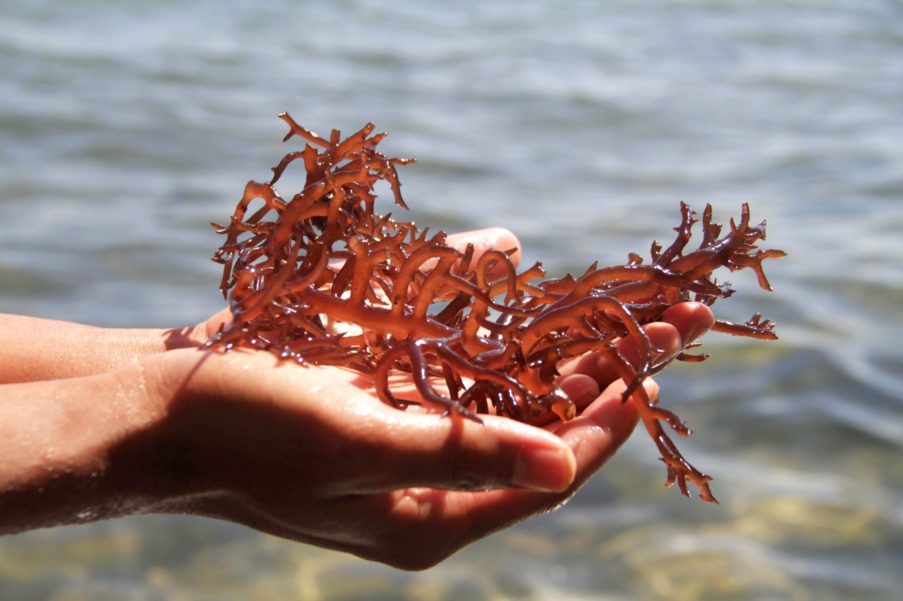

Keragaman Jenis Rumput
Laut di Indonesia
Indonesia memiliki panjang garis pantai 81.000 km dan luas perairan 5,8 Juta km2 yang terdiri dari sumber daya hayati dan sumber daya non hayati serta bahan-bahan mineral di dalamnya.
Sebagai salah satu potensi sumber daya hayati, komoditas rumput laut (seaweeds) yang dalam dunia ilmu pengetahuan dikenal sebagai algae banyak tumbuh dan berkembang di perairan Indonesiadiantaranya Gracilaria, Gelidium, Euchema, Hypnea, Sargasum dan Trbinaria..
Dan berdasarkan hasil ekspedisi laut Sibolga 1899-1990 oleh Van Bosse bahwa perairan Indonesia memiliki sumber daya plasma nutfah rumput laut sekitar 555 jenis.
Di Indonesia, penelitian rumput laut sudah dimulai sekitar dua setengah abad lalu oleh peneliti luar negeri, diantaranya adalah:
Rumphius (1750), Von Marthen (1866), Ekspedisi Siboga (1899), Danish (1914), Webber van Bose (1913), & Hofstede (1921)
Dari penelitian Siboga dan Weber Van Bosse menginventarisasi sekitar 782 jenis yang terdiri dari 196 jenis alga hijau, 452 alga merah, dan 134 alga cokelat. ekspedisi Danish dikepulauan Kai menginventarisasi sekitar 25 jenis alga merah, 28 jenis alga hijau, dan 11 alga cokelat.
Ekspedisi Snellius II di perairan Indonesia (1985) menginventarisasi sekitar 41 jenis alga merah, 59 jenis alga hijau, dan 9 jenis alga cokelat.
Proyek Buginesia III di perairan Sulawesi Selatan (1988-1990) telah menginventarisasi sekitar 118 jenis jenis rumput laut dari 40 marga alga merah, 80 jenis dari 21 marga alga hijau dan 36 jenis dari 11 marga alga cokelat.
Penelitian di perairan pantai Warambadi, Waingapu (Sumba Timur, 1997-1998) dapat dicatat dari 79 jenis dari 23 marga yang tumbuh yang terdiri 37 jenis alga hijau dari 9 marga, 22 jenis alga merah dari 8 marga marga dan 20 jenis alga cokelat dari 6 marga. (sumber : Roadmap program penguatan struktur industri rumput laut nasional, 2015)
Industri yang memanfaatkan rumput laut juga cukup berkembang pesat, jenis-jenis rumput laut yang dijadikan bahan baku industri diantaranya Euchema, Gelidium, dan Gracilaria. Rumput laut jenis Euchema dimanfaatkan dan diolah karena mengandung karaginan yang berfungsi sebagai pengatur keseimbangan, bahan pengental, pembentuk gel, dan pengemulsi.
Selain Euchema, jenis rumput laut lain yang sering digunakan adalah Gelidium dan Gracilaria yang mengandung agar untuk industri agar-agar. Selain itu jenis rumput laut lainnya dari ganggang merah karena mengandung agar-agar, karaginan, porpiran, furcelaran maupun pigmen fikobilin (terdiri dari fikoeretrin dan fikosianin) yang merupakan cadangan makanan yang banyak mengandung banyak karbohidrat.
Taksonomi Rumput Laut
Berdasarkan The International Code of Botanical Nomenclatur, Uterch 1952, rumput laut (makro alga) masuk dalam divisi Thallophyta yaitu tumbuhan yang memiliki struktur kerangka tubuh yang tidak berdaun, berbatang dan berakar, dengan rincian sebagai berikut:
Divisi: Phyta
Subdivisi: Phytina
Class: Phyceae
Subclass: Phycidae
Order: Ales
Suborder: Inales
Family: Acea
Subfamily: Oideae
Tribe: Eae
Secara umum rumput laut digolongkan menjadi empat kelas yakni sebagai berikut:
1. Rumput laut merah (alga merah) 2. Rumput laut cokelat (alga cokelat) 3. Rumput laut hijau (alga hijau)4. Rumput laut biru-hijau (alga biru-hijau)
Rumput laut dijumpai tumbuh didaerah perairan yang dangkal (intertidal dan sublitoral), dengan kondisi dasar perairan berpasir sedikit lumpur atau campuran keduanya. Rumput laut bersifat benthik dan hidup sebagai fitobentos yang thalusnya melekat pada substrat pasir, lumpur berpasir, karang, fragmen karang mati, kulit kerang, batu atau kayu.
Perkembang biakannya dapat terjadi melalui dua cara yaitu secara vegetatif dan generatif. Pertumbuhan dan penyebaran rumput laut seperti halnya biota lainnya sangat dipengaruhi oleh toleransi fisiologi dari biota tersebut terhadap faktor-faktor lingkungan (eksternal), seperti substrat, salinitas, temperatur, intensitas cahaya, tekanan dan nutrisi.